Tables
Tables across the Dev Portal share a common set of features and behaviors. This section describes the available table controls and how to use them.
Record Count
The total number of records is displayed above the table:
{kind=link}
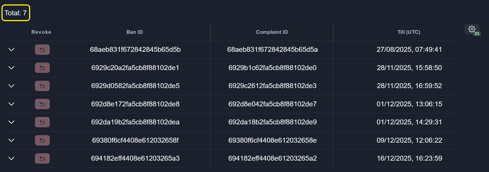
Column Order
To change the column order, hover over a column header and use the arrow buttons on either side of the header to move the column left or right relative to adjacent columns:
{kind=link}
Column Visibility
Hide Column
To hide a column, click the Eye icon in the column header:
{kind=link}
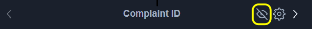
{kind=link}
{kind=link}
Column Merging
Merge Columns
To merge one column into another, select a column name from the list of available columns and click the Merge button:
{kind=link}
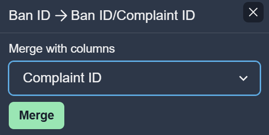
Merged Column Appearance
After columns are merged, colors can be assigned to each merged column:
{kind=link}
{kind=link}
Empty Values
For merged columns, a custom value can be specified to represent empty values:
{kind=link}
{kind=link}
Split Columns
To split a merged column back into individual columns, click the Split button:
{kind=link}
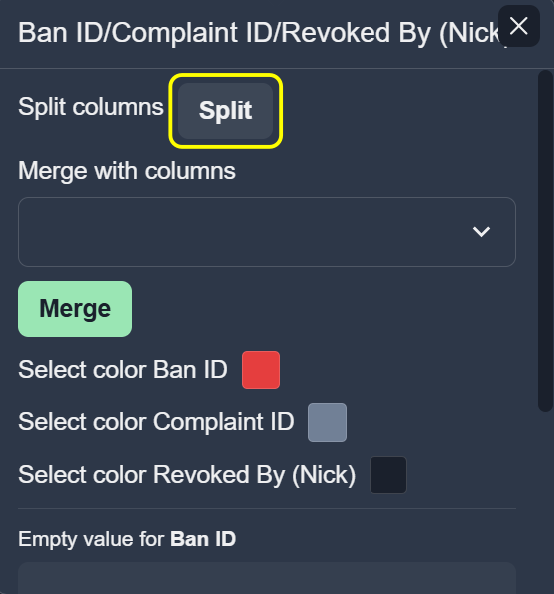
Filtering
Some columns support filtering by column value.
To apply a filter, click the Filter icon in the column header, enter a value, and click Apply filter:
{kind=link}
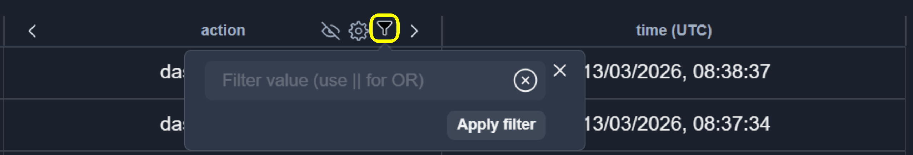
Note
To search for values using OR use ||.
Filtered columns are highlighted with a green bottom border:
{kind=link}
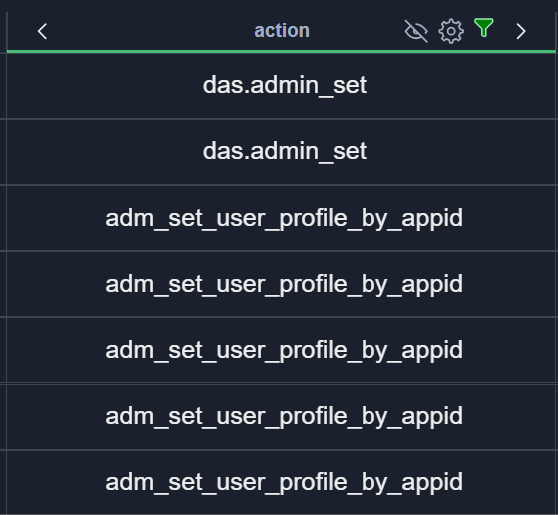
To clear the filter value, click the button:
{kind=link}
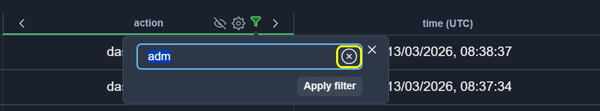
To show filters as an inline row directly below the column headers, open the Table Settings and enable the Show filter in row option:
{kind=link}
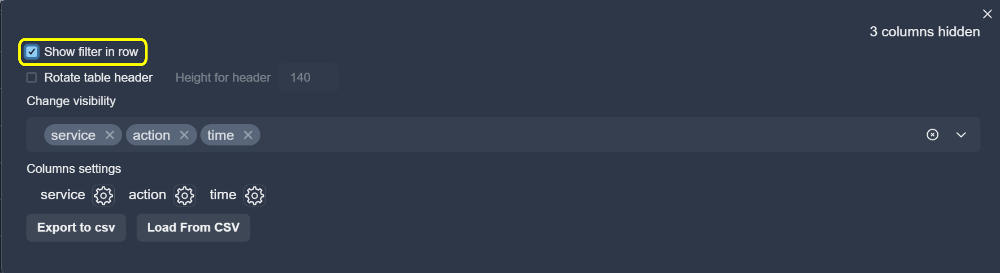
The filter row will appear below the column headers, allowing you to filter each column directly in the table:
{kind=link}
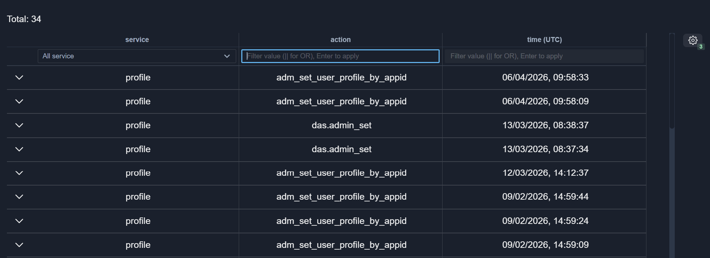
Sorting
Some columns support sorting by value.
To sort the table, click the column header:
{kind=link}
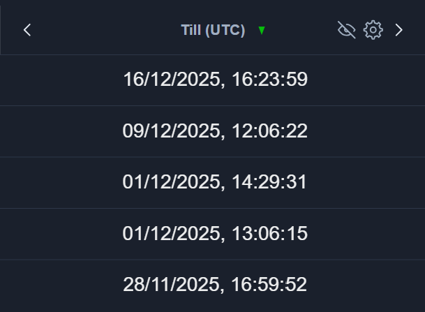
Column Width
To resize a column, hover over the column divider and drag it to the desired width:
{kind=link}
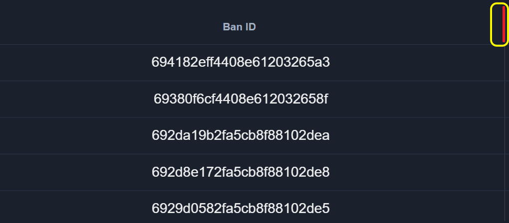
When the column width is small, all settings buttons are hidden in the drop-down menu:
{kind=link}
Table Settings
To open the table settings menu, click the table Settings icon:
{kind=link}
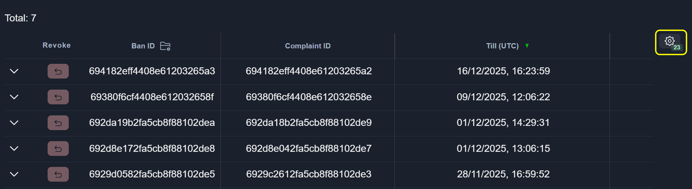
{kind=link}
Rotated Header
To rotate the table header, enable the Rotate table header option:
{kind=link}
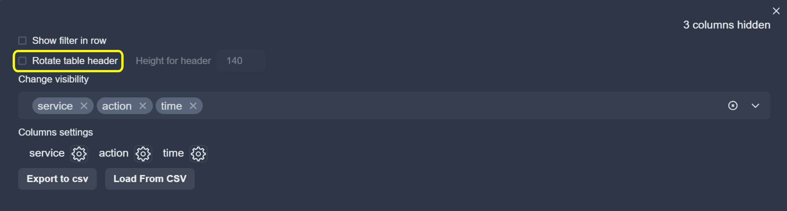
{kind=link}
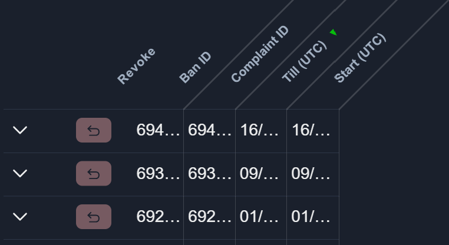
The height of the rotated header can be adjusted using the input Height for header field:
{kind=link}
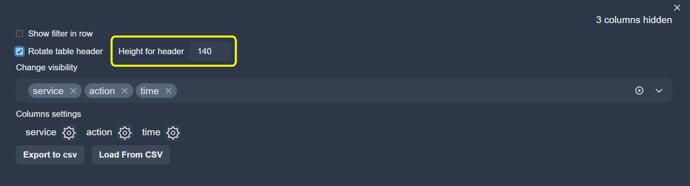
Column Visibility Control
Column visibility can be managed using the visibility selector:
{kind=link}
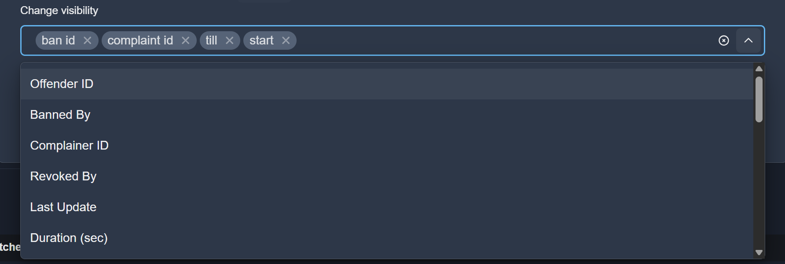
{kind=link}
Column Merging
Columns can also be merged from the table settings menu.
To merge columns, click the Merge button, select the column names from the list, and confirm the action.
{kind=link}
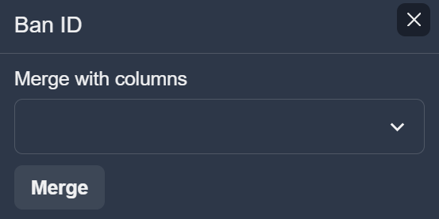
After merging, colors can be assigned to each merged column:
{kind=link}
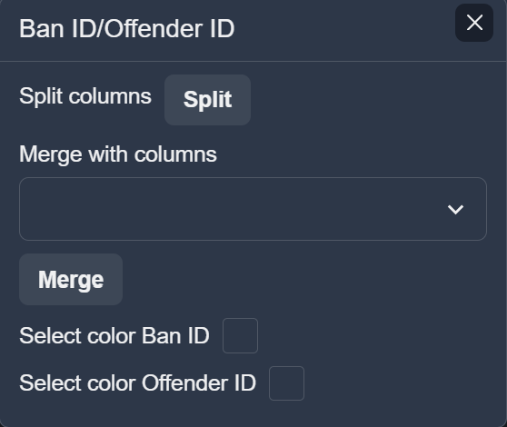
To split a merged column, click the Split button:
{kind=link}
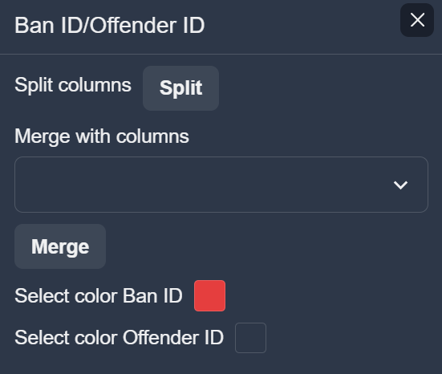
Import and Export Settings
You can import and export column settings using the buttons shown below:
Export to CSV: exports the current column settings to a CSV file.
Load from CSV: loads column settings from a CSV file.
{kind=link}
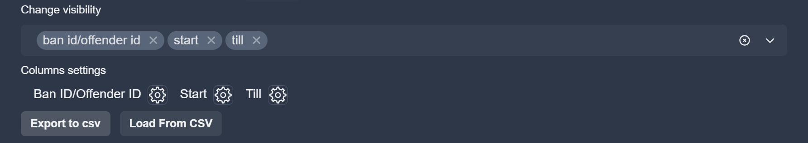